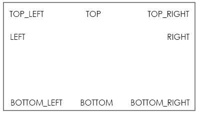
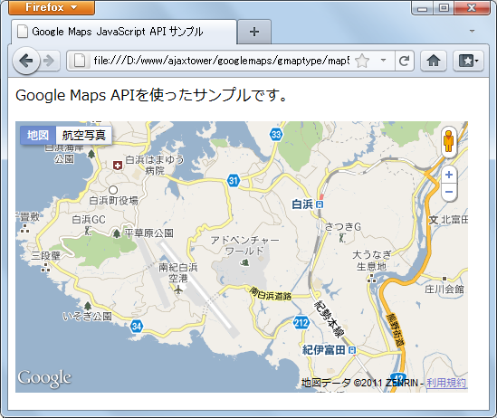
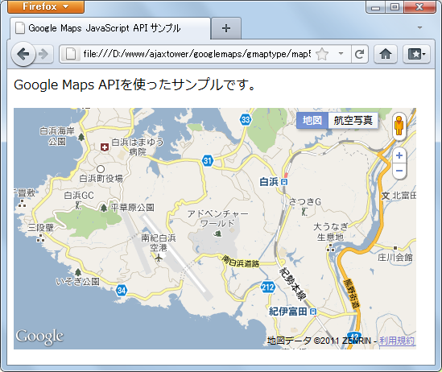

マップタイプコントールの位置
マップタイプを利用者が切り替えるためのマップタイプコントールはデフォルトでは地図の右上に表示されています。この位置は自由に設定することが可能です。ここではマップタイプコントールの位置を設定する方法について確認します。
マップタイプコントロールの位置ははMapクラスのオブジェクトを作成する時に指定するMapOptionsオブジェクトの「mapTypeControlOptions」プロパティに設定することで選ぶことができます。
「mapTypeControlOptions」プロパティに設定する値はMapTypeControlOptionsオブジェクトです。このオブジェクトには3つのプロパティが用意されているのですが、その中の「position」プロパティに使用するマップタイプコントロールの位置を表す値を設定します。
指定可能な値はControlPositionクラスで定数として定義されています。
| 定数 | 説明 |
|---|---|
| BOTTOM | 要素は下中央に配置されます。 |
| BOTTOM_LEFT | 要素は左下から中央に向かって配置されます。要素は Google ロゴの右側に配置されます。 |
| BOTTOM_RIGHT | 要素は右下から中央に向かって配置されます。要素は著作権表記の左側に配置されます。 |
| LEFT | 要素は左上の要素の左下から下に向かって配置されます。 |
| RIGHT | 要素は右上の要素の右下から下に向かって配置されます。 |
| TOP | 要素は上中央に配置されます。 |
| TOP_LEFT | 要素は左上から中央に向かって配置されます。 |
| TOP_RIGHT | 要素は右上から中央に向かって配置されます。 |
各値を設定した時にどの位置に表示されるのかは次の図の通りです。

例えば「上部中央」にマップタイプコントロールを表示する場合は次のように記述します。
var opts = {
zoom: 13,
center: latlng,
mapTypeId: google.maps.MapTypeId.ROADMAP,
mapTypeControlOptions: {
position: google.maps.ControlPosition.TOP
}
};
マップタイプコントロールに限らずコントロールはこのように表示する位置を指定することができます。ただ位置をしたとしても、位置が移動できない「Googleロゴ」と「著作権表示」や他のコントロールが表示されている位置などとの間で位置が調整されて最終的な表示位置が決まります。
サンプルコード
では実際に試してみます。
function initialize() {
var latlng = new google.maps.LatLng(33.667497,135.372505);
var opts = {
zoom: 13,
center: latlng,
mapTypeId: google.maps.MapTypeId.ROADMAP,
mapTypeControlOptions: {
position: google.maps.ControlPosition.TOP_LEFT
},
navigationControlOptions: {
position: google.maps.ControlPosition.TOP_RIGHT
}
};
var map = new google.maps.Map(document.getElementById("map_canvas"), opts);
}
<!DOCTYPE html "-//W3C//DTD XHTML 1.0 Strict//EN"
"http://www.w3.org/TR/xhtml1/DTD/xhtml1-strict.dtd">
<html xmlns="http://www.w3.org/1999/xhtml">
<head>
<meta http-equiv="content-type" content="text/html; charset=utf-8"/>
<title>Google Maps JavaScript API サンプル</title>
<script type="text/javascript"
src="http://maps.google.com/maps/api/js?sensor=false"></script>
<script src="./js/code5_1.js" type="text/javascript"></script>
</head>
<body onload="initialize()">
<p>Google Maps APIを使ったサンプルです。</p>
<div id="map_canvas" style="width:500px; height:300px"></div>
</body>
</html>
ブラウザで上記ページを開くと次のように表示されます。

今回はマップタイプコントロールを左上に、そしてナビゲーションコントロールを右上に移動しました。
なおソースコードは省略しますが、先ほどのサンプルを少し変更し、どちらのコントロールも「google.maps.ControlPosition.TOP_LEFT」に指定すると次のように表示されます。

このように同じ位置に複数のコントロールを移動しても調整が可能であれば重なって表示されるようなことはなくどちらも表示されます。
( Written by Tatsuo Ikura )

著者 / TATSUO IKURA
初心者～中級者の方を対象としたプログラミング方法や開発環境の構築の解説を行うサイトの運営を行っています。